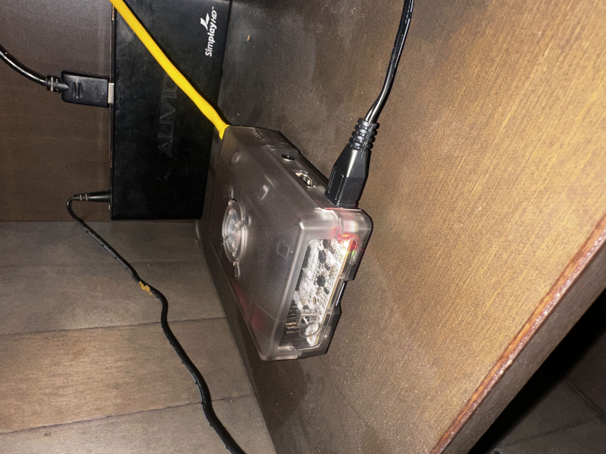
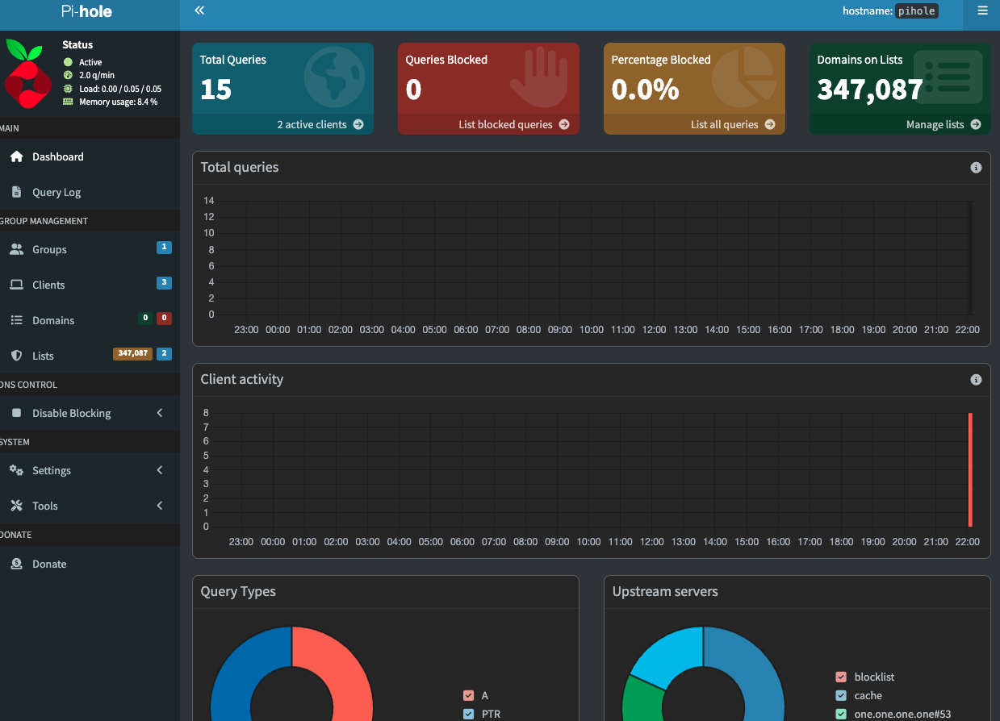

Built a network-wide ad and tracker blocker using a Raspberry Pi and custom enclosure — integrated directly into the home network.
Photos


In January 2026, I set up a Pi-hole DNS sinkhole on a Raspberry Pi and integrated it into my home network as the primary DNS server. Pi-hole intercepts DNS queries and blocks known ad-serving and tracking domains before they even load.
I also built a custom enclosure for the Pi to keep it clean and protected. The whole thing runs 24/7 and handles DNS for every device on the network — phones, laptops, smart TVs, everything.
Documents
Drop documents into docs/ and add links here.